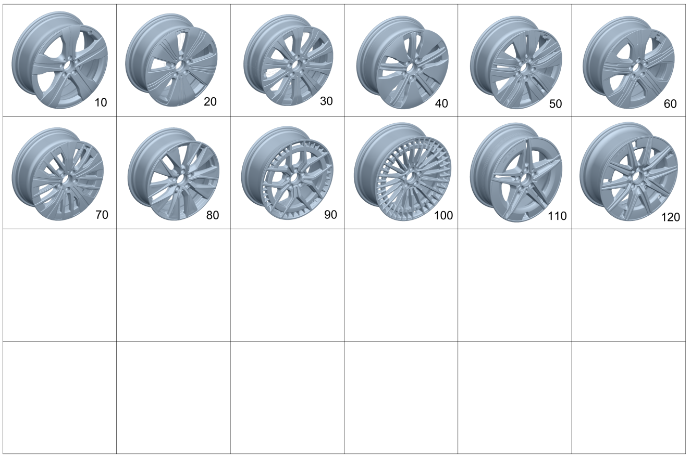

| № | Артикул | Название | Кол. | Примечание | Ограничение |
|---|---|---|---|---|---|
| 10 | A 243 401 15 00 | Дисковое колесо | 2 | Передний мост; 7,5J X 19 H2 ET 53.5 [-] OBSERVE WORK INSTRUCTIONS IN WIS WIS-NET#GF40.10-P-0804B# | 48R/R57 |
| 10 | A 243 401 15 00 | Дисковое колесо | 2 | Задний мост; 7,5J X 19 H2 ET 53.5 [-] OBSERVE WORK INSTRUCTIONS IN WIS WIS-NET#GF40.10-P-0804B# | 48R/R57 |
| 20 | A 243 401 01 00 | Дисковое колесо | 2 | Передний мост; 7,5J X 18 H2 ET 53.5 [-] OBSERVE WORK INSTRUCTIONS IN WIS WIS-NET#GF40.10-P-0804B# | R31 |
| 20 | A 243 401 01 00 | Дисковое колесо | 2 | Задний мост; 7,5J X 18 H2 ET 53.5 [-] OBSERVE WORK INSTRUCTIONS IN WIS WIS-NET#GF40.10-P-0804B# | R31 |
| 30 | A 243 401 00 00 | Дисковое колесо | 2 | Передний мост; 6,5J X 18 H2 ET 44.5 [-] OBSERVE WORK INSTRUCTIONS IN WIS WIS-NET#GF40.10-P-0804B# | R41 |
| 30 | A 243 401 00 00 | Дисковое колесо | 2 | Задний мост; 6,5J X 18 H2 ET 44.5 [-] OBSERVE WORK INSTRUCTIONS IN WIS WIS-NET#GF40.10-P-0804B# | R41 |
| 30 | A 243 401 00 00 | Дисковое колесо | 4 | Передний и задний мост; 6,5J X 18 H2 ET 44.5 [-] OBSERVE WORK INSTRUCTIONS IN WIS WIS-NET#GF40.10-P-0804B# | 4R5 |
| 40 | A 243 401 13 00 | Дисковое колесо | 2 | Передний мост; 7,5J X 18 H2 ET 53.5 [-] OBSERVE WORK INSTRUCTIONS IN WIS WIS-NET#GF40.10-P-0804B# | R96 |
| 40 | A 243 401 13 00 | Дисковое колесо | 2 | Задний мост; 7,5J X 18 H2 ET 53.5 [-] OBSERVE WORK INSTRUCTIONS IN WIS WIS-NET#GF40.10-P-0804B# | R96 |
| 50 | A 243 401 14 00 | Дисковое колесо | 2 | Передний мост; 7,5J X 18 H2 ET 53.5 [-] OBSERVE WORK INSTRUCTIONS IN WIS WIS-NET#GF40.10-P-0804B# | 97R |
| 50 | A 243 401 14 00 | Дисковое колесо | 2 | Задний мост; 7,5J X 18 H2 ET 53.5 [-] OBSERVE WORK INSTRUCTIONS IN WIS WIS-NET#GF40.10-P-0804B# | 97R |
| 60 | A 243 401 19 00 | Дисковое колесо | 2 | Передний мост; 7,5J X 19 H2 ET 53.5 [-] OBSERVE WORK INSTRUCTIONS IN WIS WIS-NET#GF40.10-P-0804B# | R39 |
| 60 | A 243 401 19 00 | Дисковое колесо | 2 | Задний мост; 7,5J X 19 H2 ET 53.5 [-] OBSERVE WORK INSTRUCTIONS IN WIS WIS-NET#GF40.10-P-0804B# | R39 |
| 70 | A 243 401 18 00 | Дисковое колесо | 2 | Передний мост; 7,5J X 18 H2 ET 53.5 [-] OBSERVE WORK INSTRUCTIONS IN WIS WIS-NET#GF40.10-P-0804B# | 04R |
| 70 | A 243 401 18 00 | Дисковое колесо | 2 | Задний мост; 7,5J X 18 H2 ET 53.5 [-] OBSERVE WORK INSTRUCTIONS IN WIS WIS-NET#GF40.10-P-0804B# | 04R |
| 80 | A 243 401 04 00 | Колесо со спицами | 2 | Передний мост; 7,5J X 18 H2 ET 53,5 [-] OBSERVE WORK INSTRUCTIONS IN WIS WIS-NET#GF40.10-P-0804B# | RSN |
| 80 | A 243 401 04 00 | Колесо со спицами | 2 | Задний мост; 7,5J X 18 H2 ET 53,5 [-] OBSERVE WORK INSTRUCTIONS IN WIS WIS-NET#GF40.10-P-0804B# | RSN |
| 90 | A 243 401 05 00 | Колесо со спицами | 2 | Передний мост; 7,5J X 19 H2 ET 53,5 [-] OBSERVE WORK INSTRUCTIONS IN WIS WIS-NET#GF40.10-P-0804B# | RTF |
| 90 | A 243 401 05 00 | Колесо со спицами | 2 | Задний мост; 7,5J X 19 H2 ET 53,5 [-] OBSERVE WORK INSTRUCTIONS IN WIS WIS-NET#GF40.10-P-0804B# | RTF |
| 100 | A 243 401 06 00 | Колесо со спицами | 2 | Передний мост; 8,5J X 20 H2 ET 50,5 [-] OBSERVE WORK INSTRUCTIONS IN WIS WIS-NET#GF40.10-P-0804B# | RVU/RVW |
| 100 | A 243 401 06 00 | Колесо со спицами | 2 | Передний мост; 8,5J X 20 H2 ET 50,5 [-] OBSERVE WORK INSTRUCTIONS IN WIS WIS-NET#GF40.10-P-0804B# | RVV |
| 100 | A 243 401 06 00 | Колесо со спицами | 2 | Задний мост; 8,5J X 20 H2 ET 50,5 [-] OBSERVE WORK INSTRUCTIONS IN WIS WIS-NET#GF40.10-P-0804B# | RVU/RVW |
| 100 | A 243 401 06 00 | Колесо со спицами | 2 | Задний мост; 8,5J X 20 H2 ET 50,5 [-] OBSERVE WORK INSTRUCTIONS IN WIS WIS-NET#GF40.10-P-0804B# | RVV |
| 110 | A 243 401 17 00 | Колесо со спицами | 2 | Передний мост; 7,5J X 18 H2 ET 53,5 [-] OBSERVE WORK INSTRUCTIONS IN WIS WIS-NET#GF40.10-P-0804B# | RQQ |
| 110 | A 243 401 17 00 | Колесо со спицами | 2 | Задний мост; 7,5J X 18 H2 ET 53,5 [-] OBSERVE WORK INSTRUCTIONS IN WIS WIS-NET#GF40.10-P-0804B# | RQQ |
| 120 | A 243 401 20 00 | Колесо со спицами | 2 | Передний мост; 7,5J X 19 H2 ET 53,5 [-] OBSERVE WORK INSTRUCTIONS IN WIS WIS-NET#GF40.10-P-0804B# | RVY |
| 120 | A 243 401 20 00 | Колесо со спицами | 2 | Передний мост; 7,5J X 19 H2 ET 53,5 [-] OBSERVE WORK INSTRUCTIONS IN WIS WIS-NET#GF40.10-P-0804B# | RVY |
| 120 | A 243 401 20 00 | Колесо со спицами | 2 | Задний мост; 7,5J X 19 H2 ET 53,5 [-] OBSERVE WORK INSTRUCTIONS IN WIS WIS-NET#GF40.10-P-0804B# | RVY |
| 120 | A 243 401 20 00 | Колесо со спицами | 2 | Задний мост; 7,5J X 19 H2 ET 53,5 [-] OBSERVE WORK INSTRUCTIONS IN WIS WIS-NET#GF40.10-P-0804B# | RVY |
| 500 | A 253 400 07 00 | Колесо (WHEEL) | 0 | Аварийное запасное колесо; 4B X 19 H2 ET 3 \+ T145/80 R19 110M | 690 |
| 510 | A 247 400 09 00 | - Дисковое колесо (DISK WHEEL) | 1 | Аварийное запасное колесо; 4B X 19 H2 ET 3 | 690 |
| 520 | A 000 401 38 24 | - Шина (TIRE) | 1 | Аварийное запасное колесо [402] БОЛЬШЕ НЕ ПОСТАВЛЯЕТСЯ | 690 |
| 550 | A 220 580 00 10 | Короб для запчастей (PARTS BOX) | 1 | Для аварийного запасного колеса | 690 |
| 560 | A 000 990 49 07 | - Винт со сфер. буртиком (SPHERICAL COLLAR SCREW) | 5 | Для аварийного запасного колеса; M14X1,5X30,7 | 690 |
| 590 | A 000 400 02 13 | Вентиль шины (TIRE VALVE) | 2 | Передний мост | |
| 590 | A 000 401 85 41 | Вентиль шины | 2 | Передний мост | |
| 590 | A 000 400 02 13 | Вентиль шины (TIRE VALVE) | 2 | Задний мост | |
| 590 | A 000 401 85 41 | Вентиль шины | 2 | Задний мост | |
| 590 | A 000 400 29 13 | Вентиль шины (TIRE VALVE) | 1 | Аварийное запасное колесо | 690 |
| 600 | A 222 400 22 00 | Колпак ступицы (CENTER CAP) | 2 | Передний мост | |
| 600 | A 167 401 59 00 | Колпак ступицы | 2 | Передний мост | RVY+700 |
| 600 | A 222 400 22 00 | Колпак ступицы (CENTER CAP) | 2 | Задний мост | |
| 600 | A 167 401 59 00 | Колпак ступицы | 2 | Задний мост | RVY+700 |
| 650 | A 000 990 18 07 | Винт со сфер. буртиком (SPHERICAL COLLAR SCREW) | 20 | Передний и задний мост | |
| 700 | A 000 905 41 04 | Датчик давл. воздуха шины (TIRE PRESSURE SENSOR) | 2 | Передний мост | 475 |
| 700 | A 000 905 88 21 | Датчик давл. воздуха шины (TIRE PRESSURE SENSOR) | 2 | Передний мост; 433MHZ | 475+(806+056/807) |
| 700 | A 000 905 88 21 | Датчик давл. воздуха шины (TIRE PRESSURE SENSOR) | 2 | Передний мост; 433MHZ | 475 |
| 700 | A 000 905 42 04 | Датчик давл. воздуха шины (TIRE PRESSURE SENSOR) | 2 | Передний мост | 475+498 |
| 700 | A 000 905 89 21 | Датчик давл. воздуха шины (TIRE PRESSURE SENSOR) | 2 | Передний мост; 315MHZ | 475+498+(806+056/807) |
| 700 | A 000 905 89 21 | Датчик давл. воздуха шины (TIRE PRESSURE SENSOR) | 2 | Передний мост; 315MHZ | 475+498 |
| 700 | A 000 905 41 04 | Датчик давл. воздуха шины (TIRE PRESSURE SENSOR) | 2 | Задний мост | 475 |
| 700 | A 000 905 88 21 | Датчик давл. воздуха шины (TIRE PRESSURE SENSOR) | 2 | Задний мост; 433MHZ | 475+(806+056/807) |
| 700 | A 000 905 88 21 | Датчик давл. воздуха шины (TIRE PRESSURE SENSOR) | 2 | Задний мост; 433MHZ | 475 |
| 700 | A 000 905 42 04 | Датчик давл. воздуха шины (TIRE PRESSURE SENSOR) | 2 | Задний мост | 475+498 |
| 700 | A 000 905 89 21 | Датчик давл. воздуха шины (TIRE PRESSURE SENSOR) | 2 | Задний мост; 315MHZ | 475+498+(806+056/807) |
| 700 | A 000 905 89 21 | Датчик давл. воздуха шины (TIRE PRESSURE SENSOR) | 2 | Задний мост; 315MHZ | 475+498 |
| 700 | A 000 905 41 04 | Датчик давл. воздуха шины (TIRE PRESSURE SENSOR) | 4 | Передний и задний мост | 475+(651/652) |
| 700 | A 000 905 88 21 | Датчик давл. воздуха шины (TIRE PRESSURE SENSOR) | 4 | Передний и задний мост; 433MHZ | 475+(651/652)+(806+056/807) |
| 700 | A 000 905 88 21 | Датчик давл. воздуха шины (TIRE PRESSURE SENSOR) | 4 | Передний и задний мост; 433MHZ | 475+(651/652) |
| 710 | A 000 400 41 00 | - Вентиль шины (TIRE VALVE) | 2 | Передний мост | 475 |
| 710 | A 000 400 41 00 | - Вентиль шины (TIRE VALVE) | 2 | Задний мост | 475 |
| 730 | A 000 992 50 00 | - Зажимное кольцо (CLAMPING RING) | 2 | Передний мост | 475 |
| 730 | A 000 992 50 00 | - Зажимное кольцо (CLAMPING RING) | 2 | Задний мост | 475 |
| 750 | A 000 401 85 19 | - Колпачок вентиля (VALVE CAP) | 2 | Передний мост | 475 |
| 750 | A 000 401 86 19 | - Колпачок вентиля (VALVE CAP) | 2 | Передний мост | 475+498 |
| 750 | A 000 401 85 19 | - Колпачок вентиля (VALVE CAP) | 2 | Задний мост | 475 |
| 750 | A 000 401 86 19 | - Колпачок вентиля (VALVE CAP) | 2 | Задний мост | 475+498 |
| 780 | A 000 401 79 09 | Гайка вентиля (VALVE NUT) | 2 | Передний мост | 475 |
| 780 | A 000 401 64 38 | Гайка вентиля (VALVE NUT) | 2 | Передний мост | 475+(806+056/807) |
| 780 | A 000 401 64 38 | Гайка вентиля (VALVE NUT) | 2 | Передний мост | 475 |
| 780 | A 000 401 79 09 | Гайка вентиля (VALVE NUT) | 2 | Задний мост | 475 |
| 780 | A 000 401 64 38 | Гайка вентиля (VALVE NUT) | 2 | Задний мост | 475+(806+056/807) |
| 780 | A 000 401 64 38 | Гайка вентиля (VALVE NUT) | 2 | Задний мост | 475 |
| 780 | A 000 401 79 09 | Гайка вентиля (VALVE NUT) | 4 | Передний и задний мост | 475+(651/652) |
| 780 | A 000 401 64 38 | Гайка вентиля (VALVE NUT) | 4 | Передний и задний мост | 475+(651/652)+(806+056/807) |
| 780 | A 000 401 64 38 | Гайка вентиля (VALVE NUT) | 4 | Передний и задний мост | 475+(651/652) |
| 800 | A 171 401 01 94 | Балансировочный грузик (BALANCING WEIGHT) | NB | Исполнение с клеевым соединением; 5 GRAMM | |
| 800 | A 171 401 02 94 | Балансировочный грузик (BALANCING WEIGHT) | NB | Исполнение с клеевым соединением; 10 GRAMM | |
| 800 | A 171 401 03 94 | Балансировочный грузик (BALANCING WEIGHT) | NB | Исполнение с клеевым соединением; 15 GRAMM | |
| 800 | A 171 401 04 94 | Балансировочный грузик (BALANCING WEIGHT) | NB | Исполнение с клеевым соединением; 20 GRAMM | |
| 800 | A 171 401 05 94 | Балансировочный грузик (BALANCING WEIGHT) | NB | Исполнение с клеевым соединением; 25 GRAMM | |
| 800 | A 171 401 06 94 | Балансировочный грузик (BALANCING WEIGHT) | NB | Исполнение с клеевым соединением; 30 GRAMM | |
| 800 | A 171 401 07 94 | Балансировочный грузик (BALANCING WEIGHT) | NB | Исполнение с клеевым соединением; 35 GRAMM | |
| 800 | A 171 401 08 94 | Балансировочный грузик (BALANCING WEIGHT) | NB | Исполнение с клеевым соединением; 40 GRAMM | |
| 800 | A 171 401 09 94 | Балансировочный грузик (BALANCING WEIGHT) | NB | Исполнение с клеевым соединением; 45 GRAMM | |
| 800 | A 171 401 10 94 | Балансировочный грузик | NB | Исполнение с клеевым соединением; 50 GRAMM | |
| 800 | A 171 401 11 94 | Балансировочный грузик (BALANCING WEIGHT) | NB | Исполнение с клеевым соединением; 55 GRAMM | |
| 800 | A 171 401 12 94 | Балансировочный грузик (BALANCING WEIGHT) | NB | Исполнение с клеевым соединением; 60 GRAMM |
Позиций: 88 · подписано на схемах: 88 · колесо — плавный зум в курсор, перетаскивание — пан, двойной клик — зум, клик по артикулу — скопировать.